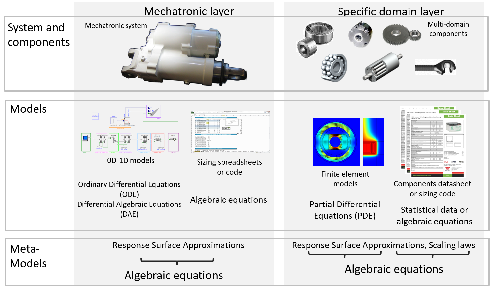
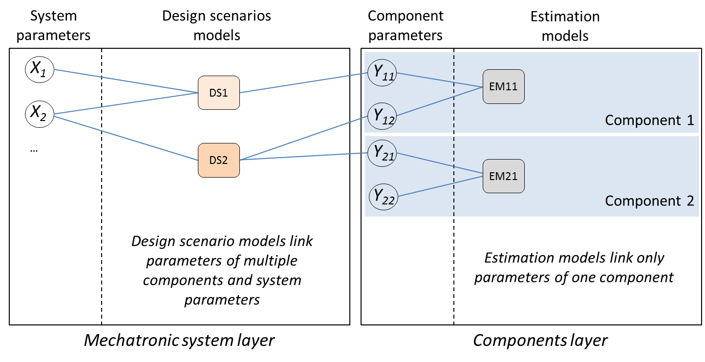
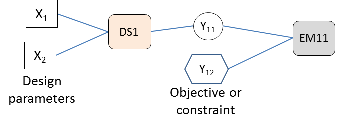
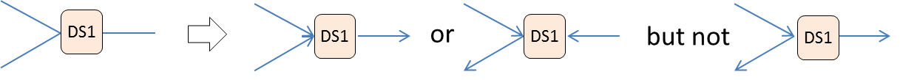
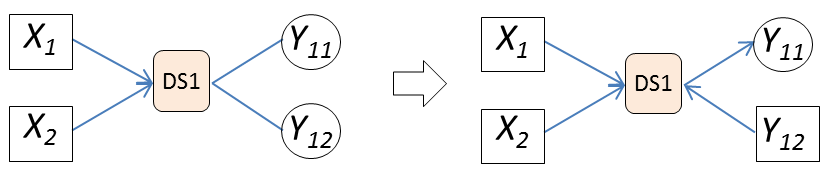
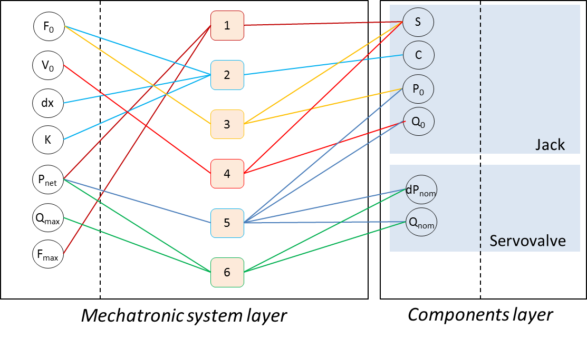
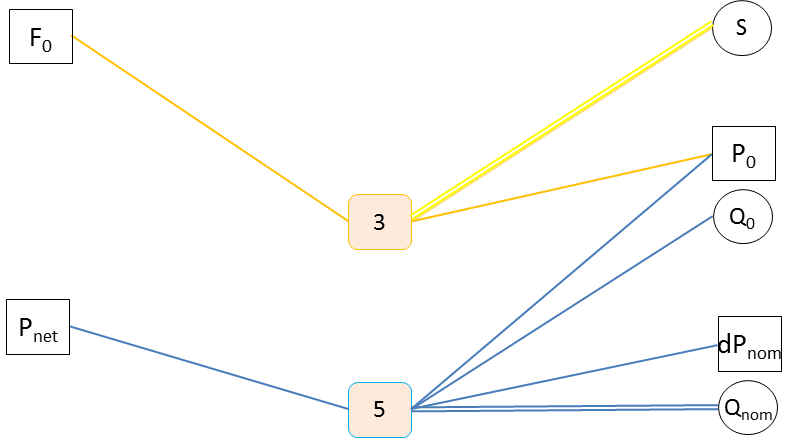
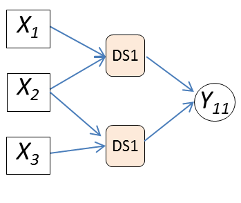
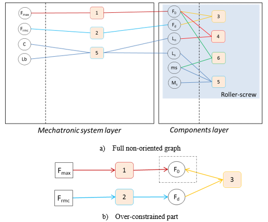
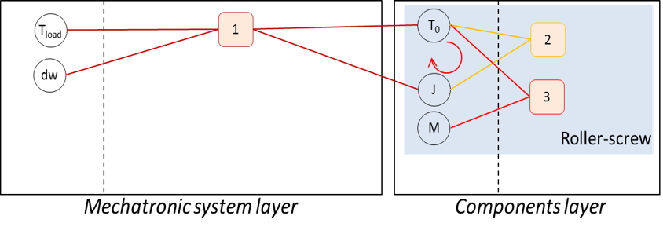

5.3. Development of a sizing procedure using design graphs#
Written by Marc Budinger (INSA Toulouse), Toulouse, France
The ordering of the calculation steps of a whole, highly constrained sizing procedure is not always an easy task. We propose here graphical representations that can be applied to highlight the different problems the designer has to face (singularity, calculation loop) and may help him solve these problems by proposing alternatives.
The following steps are suggested:
Problem definition : gather all the equations/inequalities describing the problem
Orientate the problem
Break problem calculation loops
For interested readers, more information can be found in the following document (Chapter 5 – Design graphs for sizing procedures and optimization problems definition):
Budinger, M. (2014). Preliminary design and sizing of actuation systems (HDR dissertation, UPS Toulouse). Link
5.3.1. Knowledge layers#
The knowledge required to design a mechatronic system is divided into two layers:
A system layer, which represents all the interactions between the components. It is used to evaluate the overall performance of our system. It uses 0D-1D models in algorithmic or simulation environments.
A component layer, which represents the knowledge relating to a particular component. The calculation resources associated with this layer use finite elements or specific design tools. Information at this level may also be available in datasheets.

Description
We advise you to start the implementation of a sizing procedure in an incremental way by using simple algebraic models.
We can therefore generally have a set of algebraic equations that must be ordered to obtain a dimensioning code.
It will then be possible to replace certain parts with more advanced models to increase the level of fidelity.
5.3.2. Problem definition#
For design problems characterized by a reduced set of equations, a skilled designer will be able to order design constraints of his area of knowledge quickly and intuitively. It is, however, also possible to represent and order these equations graphically. This graphical representation, called “Design Graph” here, can be used with advantage as a teaching tool or as an analysis tool for an engineer in the case of new design scenarios or new technology.

Description
The problem definition is realized with a bipartite graph for each design layer (mechatronic system layer and components layer) as represented in Figure above:
the parameters are set at mechatronic system layer level from requirements specifications (performance, constraints) and at component layer level by listing the components of the architecture and their main characteristics.
equations are then introduced to link the different parameters: at mechatronic system layer level with equations representing design scenarios, at component layer level with estimation models.
At this point the relationships between the parameters and equations are represented as non-oriented edges. It is not necessary to express the equations in detail.
5.3.3. Equations Ordering#
The orientation of the equations is the next step. The parameters set by the specifications are selected as inputs for the sizing procedure. Some parameters in the specification may take the form of outputs if the wording of the requirement defines them as an objective to be minimized or maximized or as a maximum or minimum limit constraint to be respected.

Description
Figure above summarizes the graphical notation that can be taken to represent these parameters in a form approaching an influence diagram in order to prepare the implementation of the optimization problem.
5.3.3.1. Underconstrained problems#
As an equation can generate only one output, the edges have to be oriented to have only one output per calculation node.

If a given equation remains undetermined for several parameters, some design assumptions have to be made by stating some parameters as known. These new design parameters can be included in the optimization problem and their optimal value can be determined via the optimization algorithm.

Description
A preferred choice for these new design parameters would be parameters participating in a large number of equations (such as reduction ratio) and values defined within a known range (min, max). These assumptions balance the number of equations available and the number of parameters to be determined by the calculation procedure.
Example: Under-constrained singularity, the hydraulic jack
The aim is to implement the selection procedure for a hydraulic servo-actuator (jack and servovalve) to ensure a nominal effort \(F_0\) and a nominal speed \(V_0\) for a useful stroke \(dx\). The anchorage structure has a stiffness \(K\) and does not tolerate efforts higher than \(F_{max}\). The maximum flow rate \(Q_{max}\) required by the actuator should be minimized to reduce the mass of the hydraulic supply system.
Hydraulic jack equations |
Design variables |
|---|---|
Eq1:Fmax≥S.Pnet |
Fmax: stall load |
S: piston section |
|
Pnet: network pressure |
|
Eq2: C=dx+K.F0 |
C: total stroke |
dx: desired stroke |
|
K: structure stiffness |
|
F0: maximal load |
|
Eq3: F0=S.P0 |
P0: maximal pressure |
Eq4: V0=Q0/S |
V0: maximal speed |
Q0: maximal flow |
|
Eq5: Q_0=Q_nom √((Pnet-P_0)/(dP_nom )) |
Qnom: nominal valve flow |
dPnom: nominal valve pressure drop |
|
Eq6: Q_max=Q_nom √(P_net/(dP_nom )) |
Qmax: no load flow |

The design graph highlight the sub-constraints: calculation nodes 3 and 5 need 2 parameters to be assumed known to allow the sequencing of computations. As dPnom may be given by valve technology, it may be taken as input and P0 is easy to limit to a range equal to [0, Pnet], so it will be taken as a second input (variable).

5.3.3.2. Overconstrained problems#
If several equations of design scenarios have the same output, the problem may be over-constrained. Two solutions can be applied: adding a safety factor and managing one of the equations as a constraint in the optimization problem, or giving the assignment to the most restrictive equation when direct comparison is possible.

Example: Over-constrained singularity, the roller-screw
Here we consider an over-constrained problem that is quite simple but which presents the way to solve this kind of singularity. The objective is to select a roller screw subject to two constraints: a static load and a dynamic load. Let us consider the equations from some scaling laws :
Roller-screw equations (initial set) |
Design variables |
|---|---|
Eq1: F0≥Fmax |
F0: roller-screw static load |
Fmax: maximum applied load |
|
Eq2: Fd≥Frmc |
Fd: roller-screw dynamic load |
Frmc: rolling fatigue applied load |
|
Eq3: Fd=Fdref(F0/F0ref)^0.9 |
Fdref: roller-screw dynamic load (reference component) |
F0ref: roller-screw static load (reference component) |
|
Eq4: Ln=Lnref(F0/F0ref)^0.5 |
Ln: roller-screw nut length |
Lnref: roller-screw nut length (reference component) |
|
Eq5: Ls=C+Ln+Lb |
Ls: screw length |
C: actuator stroke |
|
Lb: thrust bearing width |
|
Eq6: ms=msref(F0/F0ref) |
ms: screw linear mass |
msref: screw linear mass (reference component) |
|
Eq7: Ms=msLs |
Ms: screw total mass |

The design graph clearly points out that one of the last 3 equations must be removed to obtain a non-singular problem. To do this, one of the inequalities must me moved to constraints (Fd>=Frmc for example). Yet, without modifying the other equation (considered as: F0=Fmax), if fatigue is the sizing criterion, the constraint will never be met. That is why a degree of freedom ‘kc’ must be introduced to the equation: kc* F0=Fmax, with kc a variable input within the range [1;Inf] here.
5.3.4. Treatment of algebraic loops#
The treatment of possible algebraic loops is the last step. We typically find an algebraic loop when the selection of a component involves the use of characteristics of this same component. This case is represented graphically by a loop involving a design scenario equation and an estimation model equation as shown.

Description
Adding a new design parameter, such as an oversizing coefficient, and a constraint to be checked by the optimization algorithm makes the sizing procedure explicit. At the end of this graphical treatment, the final sequence of equations can be represented as a triangular N² diagram or a dependency matrix in order to check that the sequence of equations is explicit.